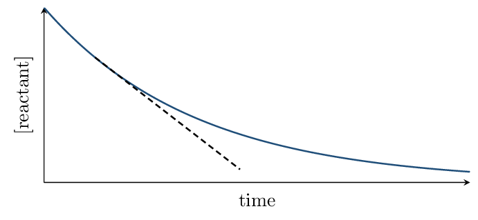
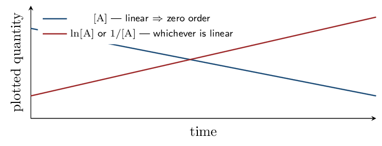
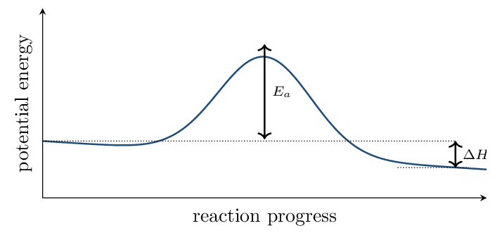

§12.1 \(\to\) 5.1 • §12.2–12.3 \(\to\) 5.2 •\ §12.4 \(\to\) 5.3 • §12.5 \(\to\) 5.4, 5.7–5.9 •\ §12.6 \(\to\) 5.5, 5.6, 5.10 • §12.7 \(\to\) 5.11.
One idea governs the whole chapter and is worth holding onto from the start: everything about a rate must be determined by experiment. You cannot read a rate law off a balanced equation. Thermodynamics tells you whether a reaction can happen; kinetics tells you how fast, and the two are independent.
Reaction Rates Zumdahl §12.1
- Express reaction rate in terms of any reactant or product.
- Distinguish average from instantaneous rate.
Read: Zumdahl §12.1 • PDF pp. 594–598
- Balance: \(\ce{N2O5 -> NO2 + O2}\):
- Molarity units:
- Does a negative \(\Delta H\) mean a reaction is fast?
INSTRUCTION A • Defining rate 25 min
Concentration change per unit time ZUM §12.1
SP 5 \[ \text{rate} = \answerblank[4cm]{$-\dfrac{\Delta[\text{reactant}]}{\Delta t}$} = \answerblank[3.8cm]{$+\dfrac{\Delta[\text{product}]}{\Delta t}$} \]The minus sign on the reactant term exists so the rate comes out — reactant concentration is falling, and a negative rate would be meaningless.
Stoichiometry relates the rates
For \(\ce{2 N2O5 -> 4 NO2 + O2}\), \(\ce{NO2}\) appears four times as fast as \(\ce{O2}\). To get one number for the whole reaction, divide each rate by its : \[ \text{rate} = -\frac{1}{2}\frac{\Delta[\ce{N2O5}]}{\Delta t} = \frac{1}{4}\frac{\Delta[\ce{NO2}]}{\Delta t} = \frac{\Delta[\ce{O2}]}{\Delta t} \]
This is why a question must say which species it means. “The rate of the reaction” and “the rate of disappearance of \(\ce{N2O5}\)” differ by a factor of two here. Read the wording carefully before computing.
GUIDED PRACTICE • Relating rates 15 min
For \(\ce{2 NO + O2 -> 2 NO2}\), if \(\ce{O2}\) disappears at 0.020 M/s:- Rate of \(\ce{NO}\) disappearance:
- Rate of \(\ce{NO2}\) formation:
- Rate of the reaction:
INSTRUCTION B • Average versus instantaneous 20 min
Reading a concentration–time curve ZUM §12.1
SP 4
- The average rate over an interval is the slope of the joining two points.
- The instantaneous rate at one moment is the slope of the at that point.
- The initial rate is the instantaneous rate at — the value used in rate-law experiments, because no products have accumulated to complicate things.
The curve is steepest at the start and flattens out. That means the rate is not constant — it decreases as reactants are consumed. Reporting an average rate over a long interval as though it were the rate throughout is a standard error.
APPLICATION • Rate reasoning 20 min
- Explain why the initial rate is preferred for determining a rate
law.
- A reaction's rate decreases steadily over time even at constant
temperature. Explain why.
Rate Laws and the Method of Initial Rates Zumdahl §12.2–12.3
- Write a rate law and interpret reaction orders.
- Determine orders experimentally from initial-rate data.
Read: Zumdahl §12.2–12.3 • PDF pp. 598–604
- Rate of the reaction \(\ce{2 A -> B}\) in terms of A:
- Instantaneous rate is the slope of what?
- Why use initial rates?
INSTRUCTION A • The rate law 25 min
Form and meaning ZUM §12.2
SP 5 \[ \text{rate} = k[\ce{A}]^n[\ce{B}]^m \] \(k\) is the rate constant; \(n\) and \(m\) are the reaction orders. The overall order is .What each order means physically
| Order in A | Double [A] and the rate… | Meaning |
|---|---|---|
| 0 | rate independent of [A] | |
| 1 | rate proportional to [A] | |
| 2 | rate proportional to [A]\(^2\) |
For \(\ce{2 N2O5 -> 4 NO2 + O2}\) at 45 °C, tangent slopes give:
| \([\ce{N2O5}]\) | rate (mol/L/s) |
|---|---|
| 0.90 M | \(5.4\times10^{-4}\) |
| 0.45 M | \(2.7\times10^{-4}\) |
GUIDED PRACTICE • Interpreting orders 15 min
For rate \(= k[\ce{A}]^2[\ce{B}]\):- Overall order:
- Effect of doubling [A]:
- Effect of doubling [B]:
- Effect of doubling both:
INSTRUCTION B • The method of initial rates 20 min
Changing one thing at a time ZUM §12.3
SP 5The procedure: run several trials, changing one concentration between two of them while holding the others . The ratio of rates then reveals that reactant's order.
For \(\ce{2 NO + O2 -> 2 NO2}\):
| Trial | \([\ce{NO}]\) | \([\ce{O2}]\) | initial rate (M/s) |
|---|---|---|---|
| 1 | 0.010 | 0.010 | \(2.5\times10^{-5}\) |
| 2 | 0.020 | 0.010 | \(1.0\times10^{-4}\) |
| 3 | 0.010 | 0.020 | \(5.0\times10^{-5}\) |
The units of \(k\) depend on the overall order — they are whatever makes the right side come out as M/s. Third order here gives /M²/s. If you are unsure of an order, checking that the units of \(k\) work is a reliable diagnostic.
APPLICATION • Determine a rate law 20 min
For \(\ce{A + B -> C}\):
| Trial | \([\ce{A}]\) | \([\ce{B}]\) | rate (M/s) |
|---|---|---|---|
| 1 | 0.10 | 0.10 | \(4.0\times10^{-3}\) |
| 2 | 0.20 | 0.10 | \(8.0\times10^{-3}\) |
| 3 | 0.20 | 0.20 | \(8.0\times10^{-3}\) |
- Order in A: Order in B:
- Write the rate law and the overall order.
- Calculate \(k\) with units.
- What does it mean physically that B is zero order?
Integrated Rate Laws and Half-Life Zumdahl §12.4
- Use integrated rate laws for zero, first, and second order.
- Identify order from which plot is linear; compute half-life.
Read: Zumdahl §12.4 • PDF pp. 604–615
- Rate law for a first-order reaction in A:
- If doubling [A] quadruples the rate, the order is:
- Units of \(k\) for a first-order reaction:
INSTRUCTION A • Three integrated forms 25 min
Concentration as a function of time ZUM §12.4
SP 5The rate law tells you the rate now; the integrated rate law tells you the concentration later.
| Order | Integrated form | Linear plot | Half-life |
|---|---|---|---|
| 0 | \([\ce{A}]_t = -kt + [\ce{A}]_0\) | \(t_{1/2} = [\ce{A}]_0/2k\) | |
| 1 | \(\ln[\ce{A}]_t = -kt + \ln[\ce{A}]_0\) | ||
| 2 | \(\dfrac{1}{[\ce{A}]_t} = kt + \dfrac{1}{[\ce{A}]_0}\) | \(t_{1/2} = 1/(k[\ce{A}]_0)\) |
Each is a straight line \(y = mx + b\) with slope \(\pm k\). That is the practical test: given concentration–time data, plot all three and see which one is linear. That plot identifies the order, and its slope gives \(k\). The AP equations sheet supplies the first- and second-order forms.
Why first-order half-life is special
Only for first order is \(t_{1/2}\) . A first-order reaction takes the same time to go from 1.00 M to 0.50 M as from 0.50 M to 0.25 M — which is why radioactive decay and drug elimination are described by half-lives at all.
Starting at \([\ce{N2O5}]_0 = 0.1000\,\mathrm{M}\), the concentration is 0.0500 M at 100 s and 0.0250 M at 200 s. Equal successive halvings confirm first order with \(t_{1/2} = 100\,\mathrm{s}\): \[ k = \frac{0.693}{100.} = 6.93e-3\,\mathrm{/s} \]
What is \([\ce{N2O5}]\) at 150 s?
It is tempting to average 0.0500 and 0.0250 to get 0.0375. That is wrong. It is \(\ln[\ce{A}]\), not \([\ce{A}]\), that is linear in time. \begin{align*} \ln[\ce{A}]_{150} &= -(6.93\times10^{-3})(150.) + \ln(0.1000)\\ &= -1.040 - 2.303 = -3.343\\ [\ce{A}]_{150} &= e^{-3.343} = 0.0353\,\mathrm{M} \end{align*} Not halfway between — and the gap between 0.0375 and 0.0353 is exactly the error that linear thinking introduces.
GUIDED PRACTICE • Half-life and order 15 min
- First-order with \(k = 0.0231\,\mathrm{/s}\). Find \(t_{1/2}\):
- After three half-lives, what fraction remains?
- A plot of \(1/[\ce{A}]\) versus \(t\) is linear. The order is:
- A plot of \([\ce{A}]\) versus \(t\) is linear. The order is:
INSTRUCTION B • Identifying order from data 20 min
The graphical method ZUM §12.4
SP 4
Procedure: tabulate \([\ce{A}]\), \(\ln[\ce{A}]\), and \(1/[\ce{A}]\) against time. Exactly one column will plot as a straight line, and that identifies the . The magnitude of the slope is .
APPLICATION • Full analysis 20 min
A reaction is first order in A with \(k = 0.0450\,\mathrm{/s}\) and \([\ce{A}]_0 = 0.800\,\mathrm{M}\).
- Find \(t_{1/2}\).
- Find \([\ce{A}]\) after 30.0 s.
- How long until \([\ce{A}] = 0.100\,\mathrm{M}\)?
Reaction Mechanisms Zumdahl §12.5
- Write rate laws for elementary steps from their molecularity.
- Use the rate-determining step to test a proposed mechanism.
Read: Zumdahl §12.5 • PDF pp. 615–620
- \(t_{1/2}\) for first order with \(k = 0.0693\,\mathrm{/s}\):
- Which plot is linear for second order?
- Fraction left after 2 half-lives:
- Rate law exponents come from:
INSTRUCTION A • Elementary steps 25 min
What actually happens, collision by collision ZUM §12.5
SP 1A mechanism is the series of elementary steps by which a reaction really occurs. For an elementary step — and only for an elementary step — the rate law can be written directly from the molecularity:
| Molecularity | Step | Rate law |
|---|---|---|
| Unimolecular | \(\ce{A -> products}\) | |
| Bimolecular | \(\ce{A + B -> products}\) | |
| Bimolecular | \(\ce{2A -> products}\) |
This is the one place coefficients do become exponents — because an elementary step describes an actual collision. Never do this for an overall balanced equation. Knowing which is which is the whole skill.
Two requirements for a valid mechanism
- The steps must sum to the .
- The predicted rate law must match the rate law.
An intermediate is produced in one step and consumed in a later one, so it in the sum and never appears in the overall equation.
GUIDED PRACTICE • Write step rate laws 15 min
- \(\ce{O3 -> O2 + O}\):
- \(\ce{NO2 + NO2 -> NO3 + NO}\):
- \(\ce{O + O3 -> 2 O2}\):
INSTRUCTION B • The rate-determining step 20 min
The slow step controls everything ZUM §12.5
SP 6Zumdahl's analogy: pouring water rapidly through a funnel into a container. The container fills at a rate set by the funnel opening, not by how fast you pour. In the same way, an overall reaction can be no faster than its — the rate-determining step.
Overall: \(\ce{NO2(g) + CO(g) -> NO(g) + CO2(g)}\). Experimentally, rate \(= k[\ce{NO2}]^2\) — note that \(\ce{CO}\) does not appear at all.
Proposed mechanism: \begin{align*} \ce{NO2 + NO2 &-> NO3 + NO} &&\text{slow (rate-determining)}\\ \ce{NO3 + CO &-> NO2 + CO2} &&\text{fast} \end{align*}
Check 1 — do the steps sum correctly? \(\ce{NO3}\) cancels, and one \(\ce{NO2}\) appears on both sides and cancels, leaving \(\ce{NO2 + CO -> NO + CO2}\). ✓ Check 2 — does the predicted rate law match? The slow step is bimolecular in \(\ce{NO2}\), so rate \(= k[\ce{NO2}]^2\). ✓The mechanism also explains the puzzle: \(\ce{CO}\) is absent from the rate law because it appears only after the rate-determining step. Speeding up a step that comes after the bottleneck changes nothing.
APPLICATION • Evaluate a mechanism 20 min
Overall: \(\ce{2 NO + O2 -> 2 NO2}\), with experimental rate \(= k[\ce{NO}]^2[\ce{O2}]\). Proposed: \begin{align*} \ce{NO + NO &-> N2O2} &&\text{fast equilibrium}\\ \ce{N2O2 + O2 &-> 2 NO2} &&\text{slow} \end{align*}
- Identify the intermediate.
- Verify the steps sum to the overall equation.
- The slow step gives rate \(= k[\ce{N2O2}][\ce{O2}]\), but
\(\ce{N2O2}\) is an intermediate and cannot appear in a rate law.
Using the fast equilibrium \([\ce{N2O2}] \propto [\ce{NO}]^2\),
show that the mechanism predicts the observed rate law.
Collision Model, Activation Energy, and Catalysis Zumdahl §12.6–12.7
- Explain rate in terms of collisions, energy, and orientation.
- Interpret energy profiles and use the Arrhenius relationship.
- Explain how catalysts work.
Read: Zumdahl §12.6–12.7 • PDF pp. 620–632
- Rate law for the elementary step \(\ce{2 A -> B}\):
- A species made then consumed is called an:
- The slowest step is called the:
INSTRUCTION A • Why most collisions do nothing 25 min
The collision model ZUM §12.6
SP 1Molecules collide constantly, yet reactions proceed far more slowly than collision frequency alone would predict. Two requirements filter them:
- Sufficient — at least the activation energy \(E_a\).
- Correct — the reacting atoms must meet.

The peak is the activated complex (transition state). Note that \(E_a\) and \(\Delta H\) are — a very exothermic reaction can still be extremely slow if \(E_a\) is large, which is why diamond does not spontaneously become graphite.
Temperature and the Arrhenius relationship
\[ k = Ae^{-E_a/RT} \qquad\Longleftrightarrow\qquad \ln k = \answerblank[3.4cm]{$-\dfrac{E_a}{R}\left(\dfrac1T\right) + \ln A$} \]A plot of \(\ln k\) versus \(1/T\) is a straight line of slope . Raising the temperature increases \(k\) because a larger fraction of molecules exceeds \(E_a\) — connect this to the Maxwell–Boltzmann curves from Unit 3.
For \(\ce{2 N2O5 -> 4 NO2 + O2}\): \(k = 2.0\times10^{-5}\ \mathrm{/s}\) at 20 °C and \(k = 2.9\times10^{-3}\ \mathrm{/s}\) at 60 °C. \begin{align*} \ln\frac{k_2}{k_1} &= -\frac{E_a}{R}\left(\frac{1}{T_2}-\frac{1}{T_1}\right)\\ \ln\frac{2.9\times10^{-3}}{2.0\times10^{-5}} &= \ln(145) = 4.98\\ \frac{1}{333}-\frac{1}{293} &= -4.10\times10^{-4}\\ E_a &= \frac{(8.314)(4.98)}{4.10\times10^{-4}} = 1.0e5\,\mathrm{J/mol} = 100\,\mathrm{kJ/mol} \end{align*} A 40-degree rise multiplied the rate constant by roughly 145.
GUIDED PRACTICE • Energy profile reading 15 min
- \(E_a\) is measured from which point to which?
- \(\Delta H\) is measured from which to which?
- If the peak lies above the reactants and the products lie below, the reaction is:
INSTRUCTION B • Catalysis 20 min
A different path ZUM §12.7
SP 6A catalyst increases the rate by providing an alternative pathway with a . It is — it is regenerated by the end.
| Catalyst | Intermediate | |
|---|---|---|
| Appears first as a | ||
| Net effect | regenerated, unchanged | consumed later |
The distinction is a favourite exam item and comes down to order of appearance. A catalyst is used in an early step and regenerated in a later one; an intermediate is created in an early step and used up in a later one. Both cancel from the overall equation — so look at which side each appears on first.
What a catalyst does and does not change
- Changes: the , \(E_a\), and the rate.
- Does not change: \(\Delta H\), the position of , or the identity of the products.
Types: homogeneous (same phase as reactants) and heterogeneous (different phase — typically a solid surface, as in a catalytic converter). Enzymes are biological catalysts.
APPLICATION • Catalysis reasoning 20 min
- On an energy profile, sketch how a catalyst changes the curve and state what stays the same.
- A catalyst speeds up a reaction. Does it produce more product at
equilibrium? Explain.
- In this mechanism, classify \(\ce{Cl}\) and \(\ce{ClO}\):
\(\ce{Cl + O3 -> ClO + O2}\); \(\ce{ClO + O -> Cl + O2}\).